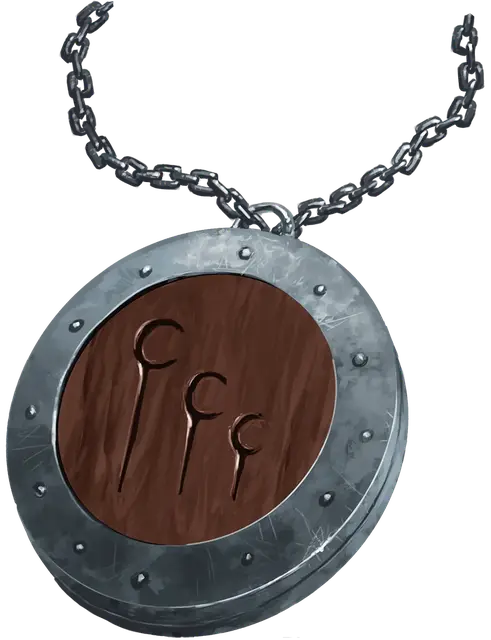

Амулет Щитостража
Shield Guardian Amulet
Чудесный предмет, редкий (требуется настройка Гуманоидом)

Рекомендованная стоимость 501-5 000 зм
Амулет представляет собой диск шириной 4 дюйма, сделанный из дерева в серебряной оправе, с руной, вырезанной на его лицевой стороне. Заклинание обнаружение магии [detect magic] обнаруживает магическую ауру школы Очарования вокруг амулета.
Для каждого щитостража [shield guardian] есть амулет, с которым он магическим образом связан. Такой амулет всегда только один, и если он будет уничтожен, щитостраж станет недееспособным, пока амулет не будет заменен на исправный.
Амулет щитостража является самостоятельной целью для атаки, если его никто не несет и не носит. КД амулета 10, у него 10 хитов, и он имеет иммунитет к урону психической энергией и ядом. Создание нового амулета занимает одну неделю и стоит 1000 зм за компоненты.
Главная задача щитостража - защищать носителя амулета. Владелец амулета может приказывать щитостражу атаковать противников или защищать себя от атак. Если носитель амулета находится в опасности, то конструкт поглотит часть урона, даже на некотором расстоянии.
Гуманоид, настроенный на этот амулет, знает расстояние и направление движения щитостража, при условии, что амулет и владелец находятся на одном плане существования. Действием, владелец настроенного амулета может попытаться повторно активировать щитостража, совершив это при успешной проверке Интеллекта (Магия) Сл 20. Повторная активация может быть совершена только тогда, когда амулет и щитостраж находятся в пределах 10 футов друг от друга.